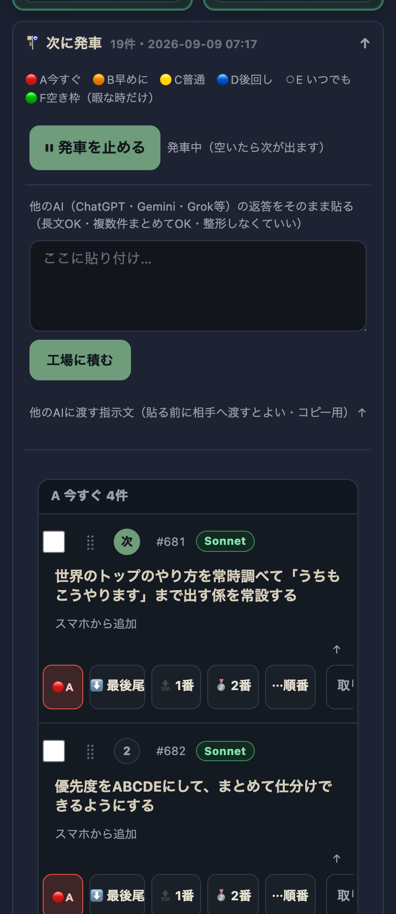
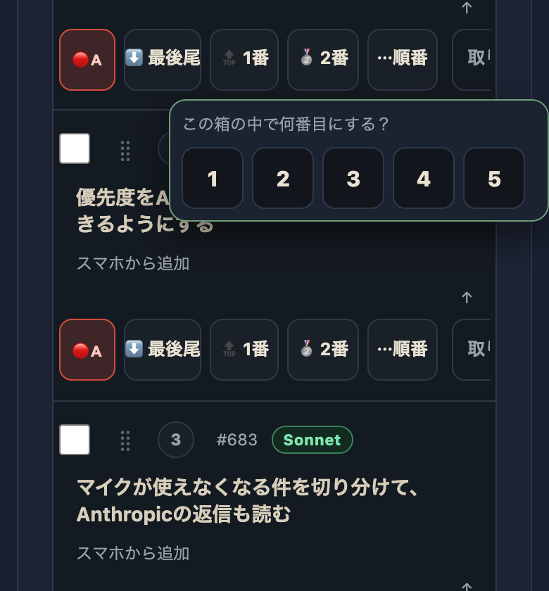
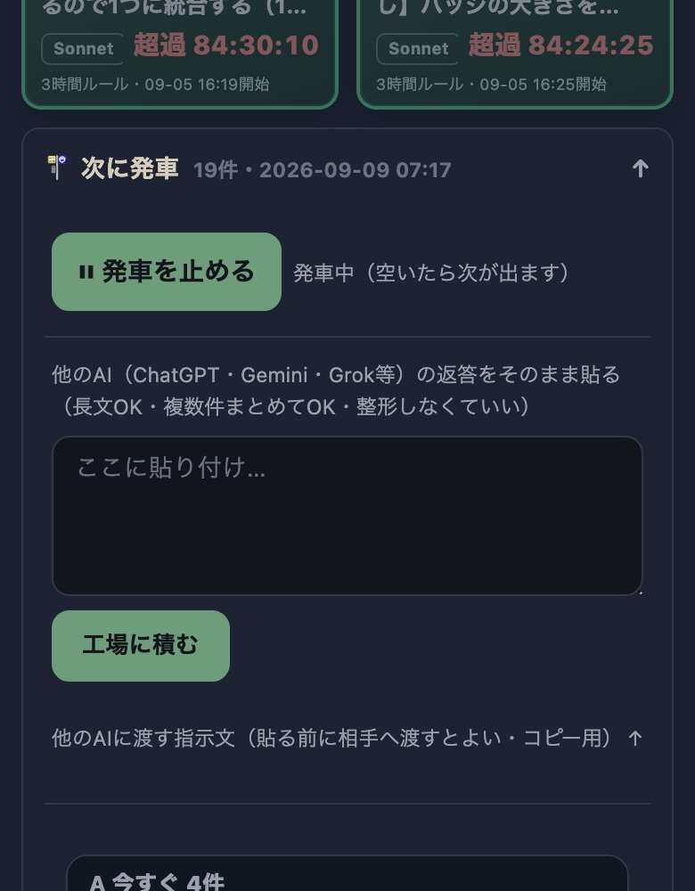
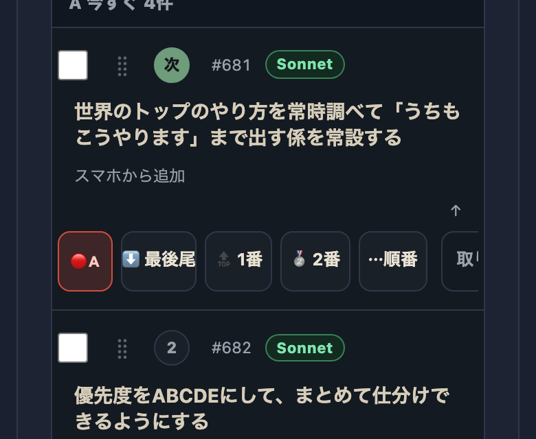

| 確認項目 | 結果 |
|---|---|
| 「1,2,3,4,5」ポップオーバーが閉じない・2つ見える | 直った（選択/外側タップ/再タップで閉じる・同時に1つだけ） |
| 優先度の表示が数字1〜5 | A〜Eの文字表示に変更（中身の数字は同じ・発車の順番ロジックは無改造） |
| F（空き枠）新設 | A〜Eの発車待ちが1本でもあれば絶対に発車しない安全弁を追加 |
| 複数件をまとめて仕分け | チェックボックス＋一括バーで1〜100件を数タップで変更可能 |
| 「2番目へ」ワンタップ | 追加済み（緊急対応をすぐ2番目へ繰り上げ） |
| 1行の高さ | 題名2行まで・ボタンは横スクロール帯に圧縮 |